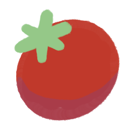

Hi, I'm Emily
a.k.a emtinside
I'm pursuing my B.S in Computer Engineering at Purdue (Spring 2027), with a focus in design of Computer Systems and a minor in Statistics.
Recently I've been exploring in hardware engineering for medical applications, especially health wearables.
Currently, I'm working at Stryker on the Vocera hardware team, experiementing with new tech for the next generation of badges.
Previously electrical engineering at Kimberly–Clark.
I've built a few things too...
